Optical Trains
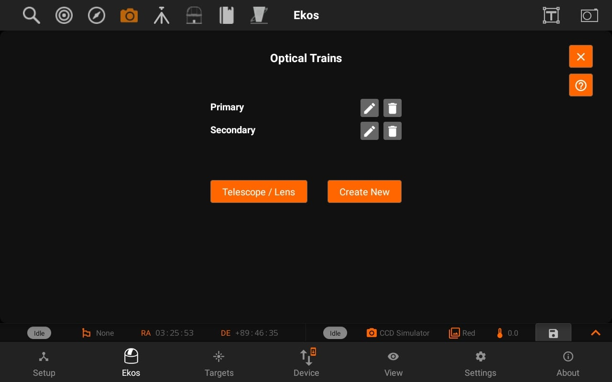
Optical Trains organize your equipment into separate unique optical paths. Each camera must have its own optical train. The following elements are specified in each train:
- Mount: Select which mount to use. Typically, all optical trains in the same profile use the same mount.
- Dust Cap: Select a mechanized dust cap if any (e.g. FlipFlat).
- LightBox: Select a flat field lightbox if any (e.g. FlipFlat).
- Scope or DSLR Lens: Select the scope or lens used in the optical path. To add, edit, or delete optical elements, tap the Telescope & Lens button.
- Reducer / Barlow: Select if any reducer or barlow is used in the train.
- Reducer: By default it is specified at 1.0 which means that has no effect. Range is 0.1x to 0.9x.
- Barlow: If the value specified is over 1.0x, then it is considered a barlow element (focal length is increased by this factor).
- Rotator: Select a mechanized rotator if any.
- Focuser: Select a mechanized focuser if any.
- Filter Wheel: Select a filter wheel. This must be a standalone filter wheel connected to Stellarmate via USB. If you have a filter wheel that is embedded in a camera, leave this field mandatory.
- Camera: Select imaging camera for this train. Each camera must have its own train.
- Guider: Select the device that receives the guiding correction pulses. This can be one of the following devices:
- Mount: If the Mount can receive guiding correction pulses, then it is best to select it so that the pulses are directly sent to the mount. This is the recommended option.
- ST4: If using an ST4 cable between the guide camera and mount, then you should select the Guide Camera as the Guider.
- Dedicated Guider: If using a dedicated guider interface device (like Shoestring GPUSB) then select it as the Guider.
If a device provides more than one functionality, then it should be specified in all relative fields. For example, MoonLite Nightcrawler is a Rotator and Focuser at the same time, so we select NightCrawler under both Rotator and Focuser fields.
Once the optical trains are configured, specify which trains to use in each Ekos module. Typically, the Primary optical train is used in Capture, Focus, and Align modules while the Secondary train is used in Guide.
Tap the help Button to view an external video tutorial on Optical Train.
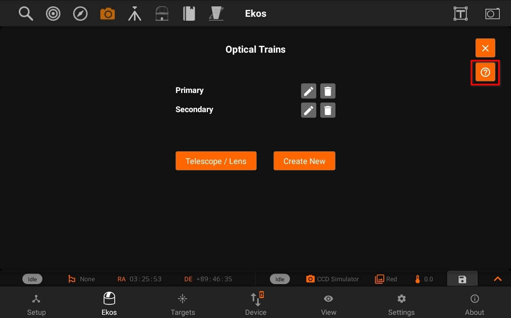
Tap the edit button and it will open the Optical train modal with the specific settings of a train.
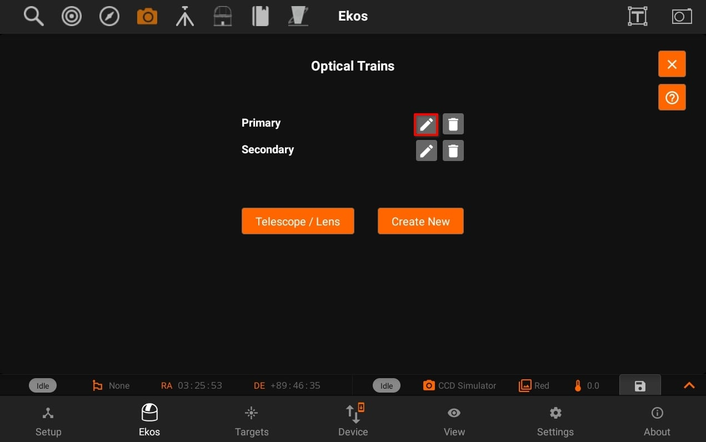
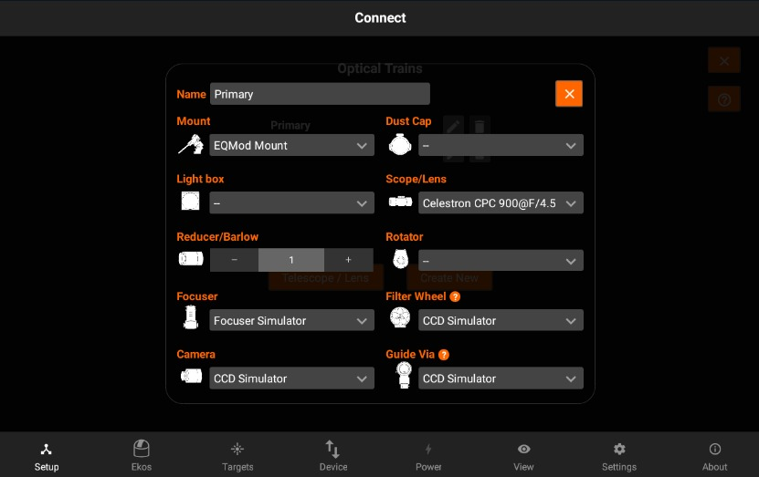
You can now view tool-tip for the description of some devices as shown in the images below:
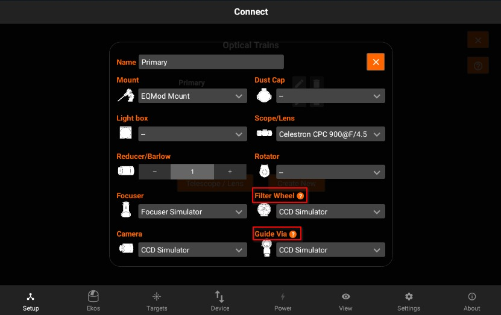
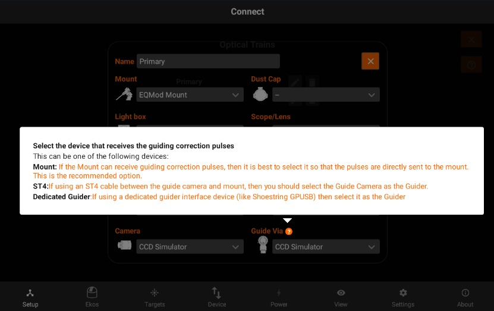
Tapping on Create new to creates a new train with a "New Train" name of previous / default settings.
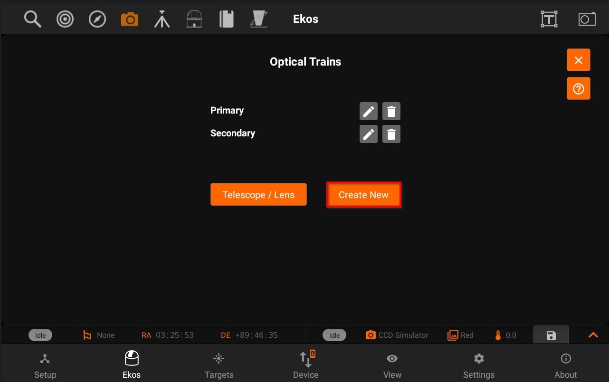
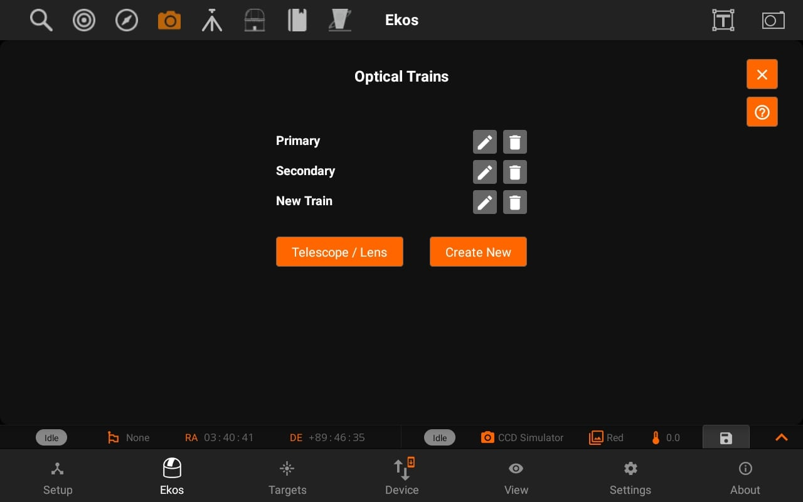
Telescope & Lens:
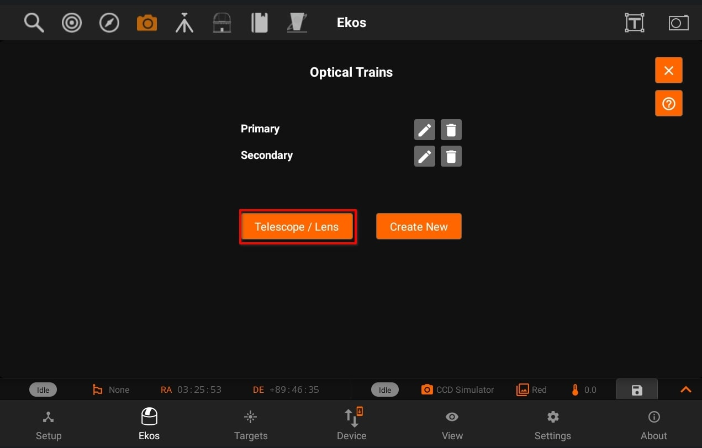
Displays Telescope / Lens View. So, you can Add / Update telescope and lens and then use those in different trains.
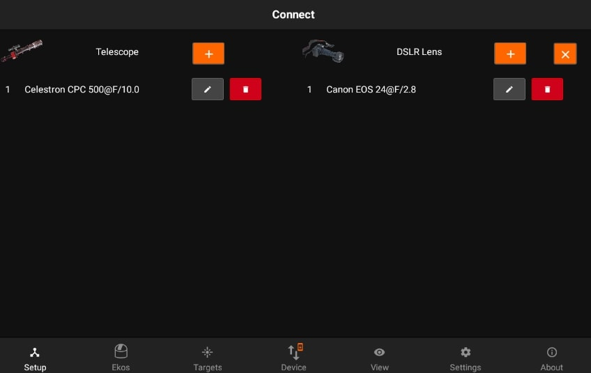
Tap on the Add/Edit button next to the telescope to edit the details of the telescope. All units are in millimeters.You can specify a Telescope and DSLR lens for your trains.
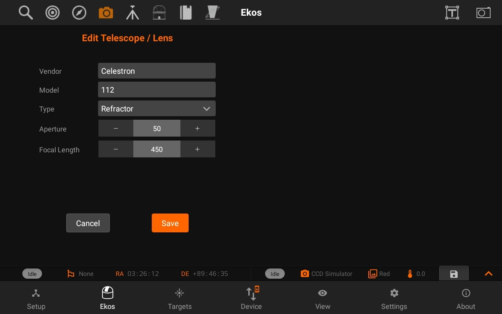
Similarly, you can add/edit DSLR lens and then use Scope/Lens in different Optical trains.
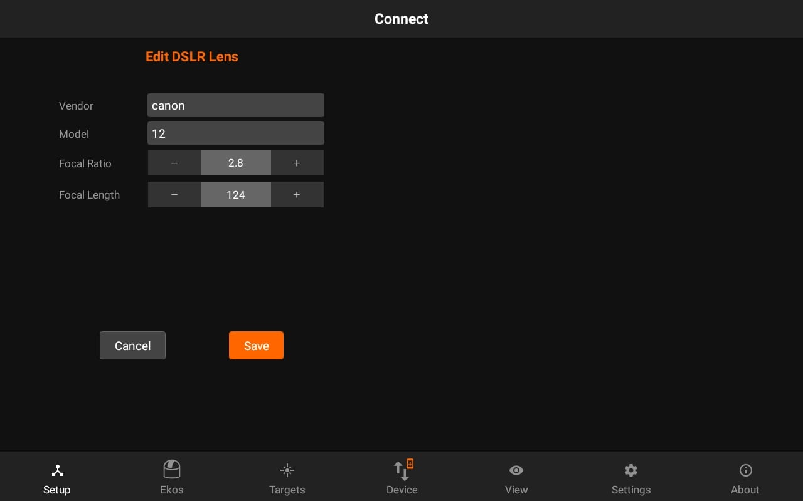
You can also access Optical train from the Setup Tab and Camera quick controls.